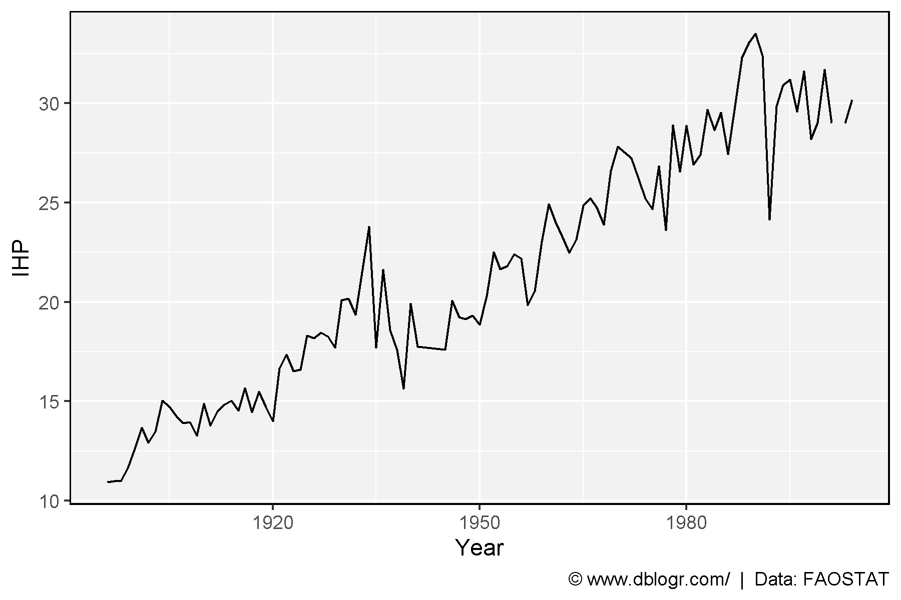

# devtools::install_github("derekmichaelwright/agData")
library(agData) # Loads: tidyverse, ggpubr, ggbeeswarm, ggrepel# Prep data
xx <- agData_LongTermMaize %>%
group_by(Year, GEN) %>%
summarise(IHP = mean(IHP, na.rm = T))
# Plot
mp <- ggplot(xx, aes(x = Year, y = IHP)) +
geom_line() +
theme_agData() +
labs(caption = "\xa9 www.dblogr.com/ | Data: FAOSTAT")
ggsave("maize_long_term_01.png", mp, width = 6, height = 4)
© Derek Michael Wright www.dblogr.com/